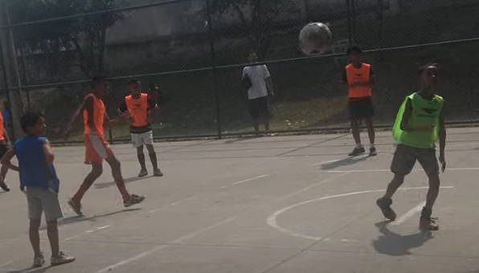

Destaque para Nathan Phelipe, do Fla Cria, que marcou 5 gols na partida. Arthur Queiroz marcou mais 3 gols para o time dos Crias. Pelo lado do Marolinha, marcaram Murillo e Fabiano Olímpio.

Um dos gols de Nathan Phelipe foi em uma bela cobrança de penalti.